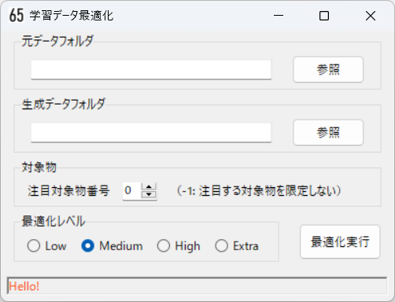

AI学習データ自動最適化による検出性能向上
概要
- AIで物体検出する場合にもっとも重要なのは用意する学習データの質と量であるが、具体的にどのような学習データを用意すれば良いかは経験と勘と試行錯誤によることが多い。
- 検出性能を向上させるために単純に学習データを増やしていけば良いというわけではない。 学習データを増やしても一向に検出性能が向上しない、また特定シチュエーションでの検出性能のみが向上する、という状況に陥ることも多い。
- この課題に対して、AIの特性を踏まえた理論的に正攻法の総当たり的なアプローチ手法もあるが、計算コストが増大するため現実的な解決策にならない場合が多い。
- 検出性能を向上させるためには、学習データとして多種多様で（バリエーションが多く）偏りの少ない画像を選ぶ必要があるが、画像が数百枚を超えると適切に判断することが難しくなる。 特に画像を減らす判断が極めて難しいこともあり、新たな画像を適当に選んで学習データに追加して評価する、という単純作業を繰り返すことしかできなくなる。 そのうち画像が増えて収拾がつかなくなるとともに、画像数に比例してAIの学習時間も増大するため精神的にも疲弊して「この辺が現状AIモデルの限界だろう」と都合よく解釈して諦める、ということになったりもする。
- 物体検知に用いる帰納法的AI手法は、見た目（対象物の写り方）だけを学習して推論するため、性能に関わる特性が検出対象とするモノや環境によって大きく変わってしまい、その振れ幅が他のアプローチ手法に比べて大きくなる。 転移学習させる場合は元の学習済モデルと検出対象の兼ね合い（相性）も大きく影響する。結局は実際に試してみるまでは性能を予測できず、試してみながら試行錯誤によって性能向上を図ることが最善手となる。
- ここで必要になるのは、AIの高度な知識や手法ではなく、試行錯誤的に単純作業を繰り返す忍耐力である。これこそ真っ先に機械による自動化を検討すべき作業のようにも思える。
- そこで、用意した学習データから検出に最適な学習データのみを自動的に選別する「学習データ自動最適化ツール」を開発し、検出性能を確認した。
- 画像を適当に取捨選別しつつ学習データに追加して評価する作業を繰り返すことで、最適な学習データに近づけていくが、 状況に応じたデータの割り振りやAIモデル使用した評価などの細かい処理は、これまでの経験と勘に基づいて行ってきた作業を再現するように実装（プログラミング）した。 目的に対して理想的な処理方式とは言えないかもしれないが、実用レベルの近似解に効率的に到達する方式になっていると考えている。
- 機械（計算機）なので精神的に疲れて諦めることもなく、最適な学習データに近づける作業を最後まで頑張るため、 ヒトよりも高品質の学習データを獲得できる可能性がある。ただし、AIモデルによる学習と推論を繰り返すため機械の発熱は避けられない。
- 最も基本的な動作原理（考え方）は、ある時点の学習モデルで正しく推論できてしまう画像はそれ以降の学習データに含める必要はなく破棄しても良い、 冗長な画像を含まない必要最小限の学習データの方が検出性能を確保する上でも有利に働く可能性がある、という仮説に基づいている。
学習データ自動最適化
- 自動最適化ツールの画面を示す。
- 元データフォルダは入力する画像とラベルが格納された任意のフォルダを指定する。
- 生成データフォルダは最適化で生成される必要最小限の学習データ（画像とラベル）が格納される任意のフォルダを指定する。
- 検出対象物に優先度がある場合に、注目する対象物番号を指定することで効率的に最適化する（収束が早くなる）。他の対象物が検出できなくなるわけではない。
- 最適化レベルはLow,Medium,High,Extraの順に最適化の強度が強くなり、より厳選された学習データが生成される。 最適化の強度が強い方が処理時間が短くなる（収束が早くなる）とともに、生成される学習データが少なくなる。
- 最適化実行すると、画面下部のステータスバーに処理状況が表示される。
- おおまかな処理フローを下図に示す。
- 入力する元データは画像とラベルで構成され、以下のフォルダに格納しておく。
[元データフォルダ] +- images/ - 画像格納フォルダ | | photo001.jpg - 画像（ファイル名は任意） | | photo002.jpg - 画像 | | ... +- labels/ - ラベル格納フォルダ | classes.txt - クラスファイル（対象物名リスト） | photo001.txt - ラベル | photo002.txt - ラベル | ...- ラベルはアノテーション作業で作成される画像中の対象物体を囲む枠座標値が書かれたテキストデータ。
- 出力される学習データは訓練データと検証データからなり、以下のフォルダに格納された形で生成される。
[生成データフォルダ] +- images/ - 画像格納フォルダ | +- train/ - 訓練画像格納フォルダ | | | photo001.jpg - 画像 | | | photo002.jpg - 画像 | | | ... | +- val/ - 検証画像格納フォルダ | | photo021.jpg - 画像 | | photo327.jpg - 画像 | | ... +- labels/ - ラベル格納フォルダ +- train/ - 訓練ラベル格納フォルダ | | photo001.txt - ラベル | | photo002.txt - ラベル | | ... +- val/ - 検証ラベル格納フォルダ | photo021.txt - ラベル | photo327.txt - ラベル | ...- AIモデルは訓練データからパターンを学習し、学習が適切に進行しているか確認するために検証データを利用して学習途中にモデル性能を評価する。
- AIモデルYOLOで学習したモデルで推論を行い、対象物を正しく検出できたら「正解」、対象物を検出できなければ「不正解」とする。
ここで正解した場合は不要データとして破棄し、不正解の場合は未検出データとして、次回の学習データと評価データに振り分ける。

- ヒトがアノテーションした対象物を楕円で描画し、AIの推論結果を矩形で描画している。
- 正しく検出している青系色楕円を「正解」、検出できていない赤系色楕円を「不正解」とする。
- 赤系色矩形は他のモノを誤って検出しているが、誤検出は今回のデータ最適化の制御には利用しない（誤検出はデータ最適化ではない他の方法で対処すべき）。
- 最適化の進捗状況に応じて適切にデータを割り振る。特に学習データ内の訓練データと検証データの割り振りは適切な配慮と工夫が必要となる。
検出性能の比較
- 検出に用いた880画像は、9月6日に一つのカメラ位置から撮影したものだが、撮影中の日照条件の変化が大きく、変化に富み様々な映り方をしているフレーム画像が含まれている。
- 最適化に用いる元データは以下の2種。
454画像 8月14日～9月5日に撮影した画像（撮影回数11回）。バリエーションに富んだ画像になるよう撮影の度にカメラ位置と撮影方向を変えた。できるだけ多様な映り方になっているフレーム画像を目視でピックアップした。 738画像 454画像に対して、9月7日～9月17日に撮影した画像（撮影回数5回）を追加した。撮影方法やフレーム画像のピックアップ方法は454画像と同様。 - 自動最適化ツールに4種の最適化レベル（Low,Medium,High,Extra）を用意している。最適化しない場合を含め、以下の5種の学習データを用意する。
無し 最適化無し。ヒトが目視でピックアップした画像をそのまま学習データとする（画像にアノテーションを行い、8：2の割合で訓練データと検証データに分ける）。 Low 弱い最適化で選別した学習データを用いる。画像数は元画像に比較的近い数となる。 Medium 並みの最適化で選別した学習データを用いる。画像数は元画像の半分に近い数となる（元データの性質で増減する）。 High 強い最適化で選別した学習データを用いる。画像数は元画像の半分以下になる（元データの性質で増減する）。 Extra 最強の最適化で選別した学習データを用いる。画像数は最も少なくなる。 - 学習に用いるYOLOv8のモデルサイズはN,S,Mの三種。
- 検出用880画像に対して、学習モデルで推論し検出ラベルを出力、ヒトがアノテーションした目視ラベルと検出ラベルを照合し、検出数および誤検出数を出力する。
- 推論時のconf閾値は比較のため一律0.5とする。
- 検出数は画像に映り込んでいるカメを正しく検出した回数、誤検出数は画像中のカメではないモノをカメとして検出した回数。
- 検出数が多く誤検出数が少ない方が良いが、誤検出は今回のデータ最適化ではない他の方法で対処するためここでは重要視しない。
元データが454画像の場合


- ばらつきはあるものの、自動最適化ツールによる最適化で画像数（学習データ数）を大幅に減らしても、検出数はほとんど低下していない。
- 最適化で画像数（学習データ数）を減らした方が検出数が多くなっているケースが多い。元データの偏りが最適化によって是正された可能性がある。 また、YOLOv8n(Nano)やYOLOv8s(Small)という小さいサイズのモデルで最適化の効果が大きい。
元データが738画像の場合


- ばらつきはあるものの、自動最適化ツールによる最適化で画像数（学習データ数）を大幅に減らしても、検出数はほとんど低下していない。
- 454画像の場合と傾向が少し異なるのは、元データのバリエーションの違いが影響している可能性がある。 454画像は11回、738画像は16回撮影しており、撮影ごとにカメラ位置と撮影方向を変えているため738画像の方がバリエーションが高く、相対的に偏りが少ないデータと考えられる。
感触
- 自動最適化ツールによる最適化で画像数（学習データ数）を大幅に減らしても、検出数がほとんど低下しないことが確認できた。 動作原理の元になった仮説がそれほど間違ってはいない、ということだろう。
- 検出性能を高めるためには、自動最適化ツールを利用しながら、バリエーションを高めるように画像数（学習データ数）を増やすことが有効と考えている。
- なお、検出数が増えると誤検出数も増える傾向になる。 物体検知AIモデルは対象が「何であるか」を理解しないまま、その見た目だけを学習して、学習した見た目に近いものを検出しているに過ぎない。 本質的には「類似画像検索」と同じことをしているだけであり、そこにヒトが期待しがちになる「知能」は無いと理解しておく方が現実的だし真実に近い。 理解とは何か？知能とは何か？というある意味形而上学的な議論も一興だが、現実的な課題解決には繋がらない。 検出が難しい際どい対象まで検出する強い学習モデルは、それに近い違うモノを誤検出しがちになるのは、ある意味必然である。 誤検出しがちになる対象を別の名前の新たな対象物として学習することにより、誤検出を減らすことができる。